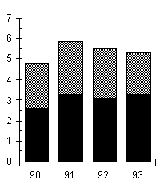
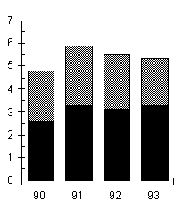

Ques Refer the graph below to answer the question.
PROFIT AND REVENUE DISTRIBUTION FOR ZIPPY PRINTING, 1990–1993, COPYING AND PRINTING.
Total Profit Total Revenue
(in thousands of dollars) (in millions of dollars)

 

Distribution of Profit from Copying, 1992
(in thousands of dollars)

In 1993, the total profit was approximately how much greater than the total profit in 1990?
Solution:Remember,
rarely does a graph question involve significant computation. For this
question, we need merely to read the bar graph. The Total Profit graph shows
that in 1993 approximately 680 thousand was earned, and in 1990 approximately
560 thousand was earned. Subtracting these numbers yields
680 – 560 = 120
The answer is (C).